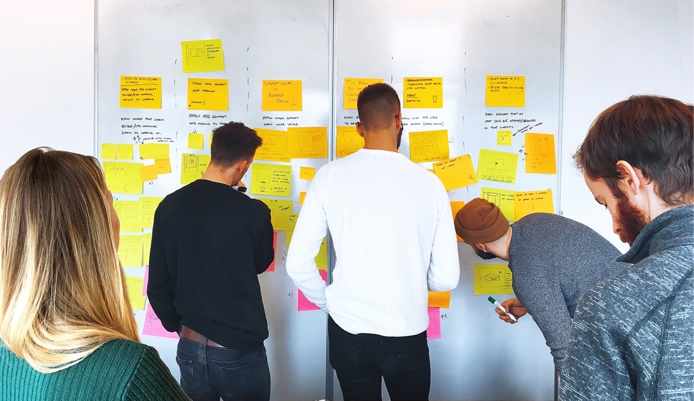

Storyboards Redesigned

A brief introduction to Storyboards
To give a quick overview, Storyboards are essentially an interactive social media grid that sits on our client's product pages. For example, on the Volvo XC60 webpage, their Storyboard will be continuously updated with genuine social media content about the specific car model, it has been proven to be an effective human-centred marketing approach. Given that Volvo has 8 different car models multiplied by 80 country web domains the visibility of our product is extremely high, and this is just for Volvo, we also support Porsche, Mclaren, Toyota and more.
Process insights
By exercising different research techniques, I was able to learn everything about Storyboards and uncover crucial insights. I have included the main findings for each research method below.
Internal Interviews
-
Storyboards have not been optimised for use on touch devices.
-
Our clients are failing to promote the use of the hashtags required to bring in new social content, e.g. #porsche911, resulting in a stifled flow of content.
Analytics
-
Using the conversion tracking tool I designed we were able to see that on average 48.2% of viewers hovered our grid (2 seconds minimum) but only 8.2% clicked into an item (social media post).
-
The percentage of Storyboard views on mobile averages 42% and tablet 11%.
Usability Tests
-
All participants scrolled past our Storyboards either before it loaded onto the page fully or because they appeared uninteresting.
-
Users found the context stimulating, however, the effort required to click into an item to read it, then click out again did not align with what they wanted, which was to read the next post. It was a dead-end user journey that lacked flow.
Design workshop
-
When hovering an item, we display the item description. Unfortunately, this means users can read all of the items without clicking into one and as a result, they never see CTA buttons.
-
Items can be perceived as links to social media.
Problems and Solutions
By solving each problem independently, the corresponding solution could be measured as a single entity, therefore, avoiding any bias. Below I have included three of the major problems and solutions.
1. Make it eye-catching
Problem
Viewers skim past the Storyboards either because it is not eye-catching enough to attract their attention or because it hasn't loaded in.
Question
How might we make the Storyboard more eye-catching or visible whilst it loads in?
Solution
Apply animation to a simple text message e.g. “#VolvoMoment” and load in image placeholder squares, apply this when it scrolls into the viewport.
Hypothesis
We believe that animating placeholder squares and text message for people scrolling quickly or with slow internet will catch their attention and generate more engagement.
Test
Monitor engagement levels of a Storyboard for ‘x time’ then implement the loading feature and compare engagement levels.
Impact
In progress.
2. Create a seamless experience
Problem
Users were experiencing a lack of flow between each social media items.
Question
How might we create a more seamless journey when interacting with the Storyboard?
Solution
Apply carousel functionality when viewing an item full screen.
Hypothesis
We believe that being able to click through to the next item will create more engagement with the Storyboards.
Test
Calculate the average length of engagement time for a particular Storyboard then implement the carousel functionality and measure again to compare the results.
Impact
In progress.
3. Increase conversions
Problem
Our CTA buttons are not clicked enough because viewers don't click into an item and when they do they often go unnoticed.
Question
How might we get more users to click into items and make our CTA buttons more impactful without detracting from the experience?
Solution
By limiting the item description to one line and truncating it, users are forced to click into an item to read it, therefore, exposing CTA buttons. Applying a delayed fade-in to the CTA button will attract the viewer's attention but not be distracting.
Hypothesis
We believe that showing a preview of the item description and applying animation to the CTA button for users will direct the user towards CTA’s and increase their awareness of them.
Test 1
Calculate the average click-through rate of an item for a single Storyboard, then apply truncated text, monitor the click-through rate and compare.
Test 2
Calculate the average click-through rate for CTA buttons, apply the fade-in animation, monitor the clicks and compare.
Impact
In progress.